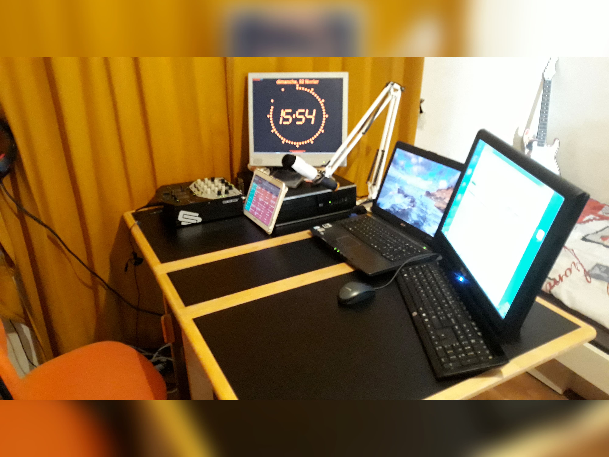
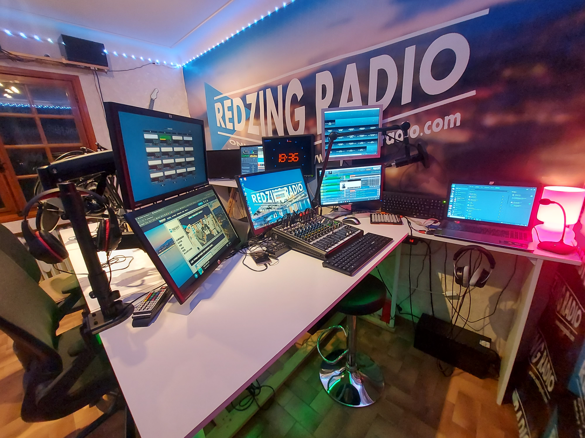
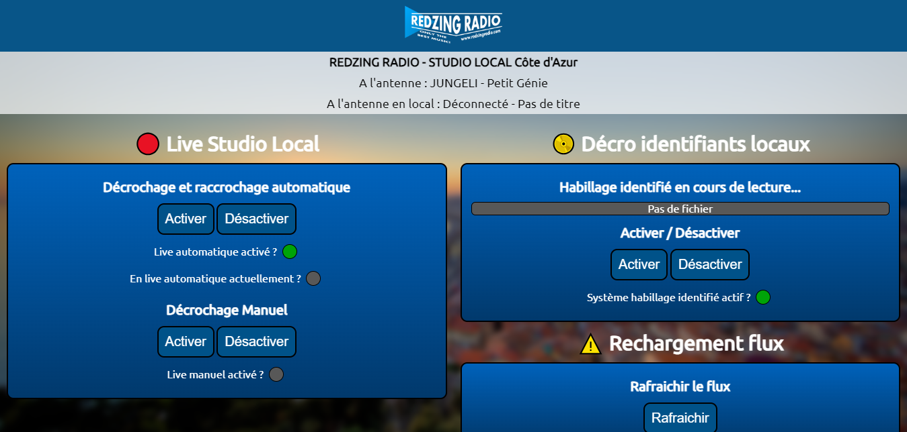
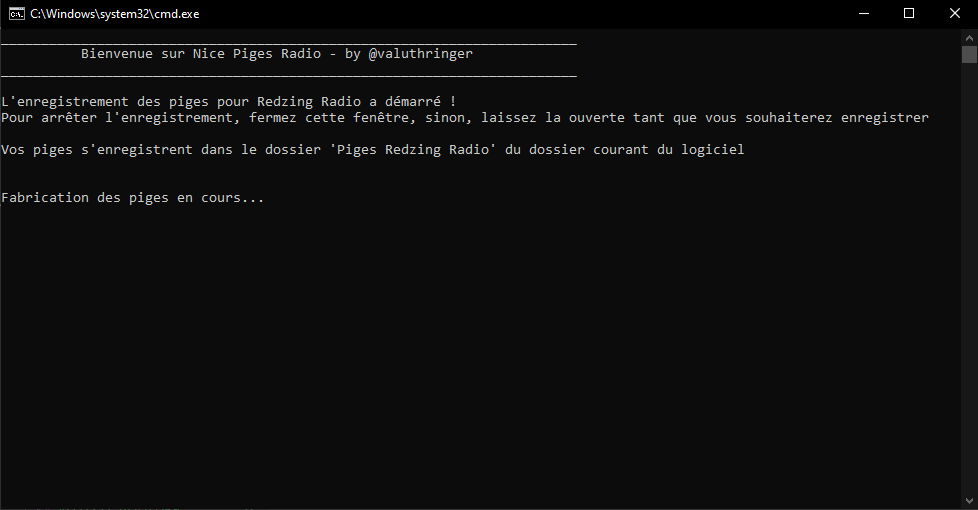
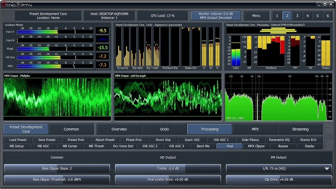
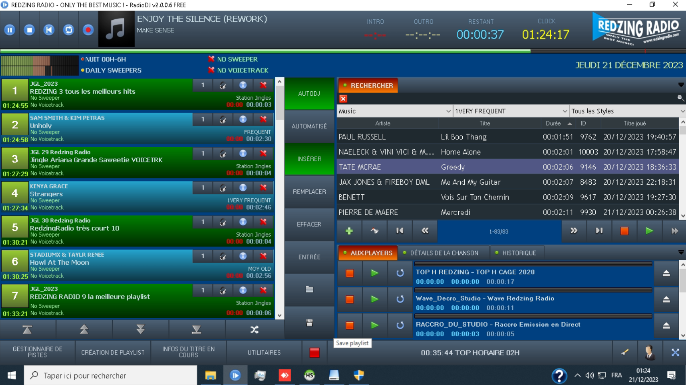

Contact
Projets
CV
Me connaitre
Déja passionné de musique, en décembre 2019, j'ai commencé à m'intéresser au monde de la radio. J'ai donc décidé (au début pour un délire entre copains) de créer ma propre webradio locale, Redzing Radio. J'ai commencé par chercher une équipe, au début mes camarades de classe, et nous avons réalisé notre premier direct depuis ma chambre.
La radio a commencé a prendre de plus en plus d'ampleur et d'audience, passant de quelques auditeurs du lycée à plusieurs centaines d'auditeurs dans la ville, puis dans le département. J'ai donc décidé de concrétiser ce projet fou en créant l'association Redzing Radio en 2022, et en faisant tourner 24h/24 la Radio avec avec des programmes, des émissions, des directs, des podcasts, des interviews, des jeux, des concours, etc...
Actuellement, nous sommes une équipe de 32 personnes partout en France, et nous avons pour objectif de développer encore davantage notre radio !
Pour faire de la radio, il faut du matériel. Nous avons donc investi dans du matériel de qualité pour faire de la radio dans les meilleures conditions (chaque membre au début s'était cotisé). Nous avons commencé par faire nos émissions dans une chambre inoccupée, avec un micro USB et un ordinateur. Puis, nous avons investi dans un micro, une table de mixage, un casque, un ordi fixe, etc... Au fil des années, nous avons investi dans un studio avec un matériel récent... et un micro pour chaque animateur.
2 ans plus tard, la radio gagnant en audience et comptant davantage de bénévoles, il a fallu concevoir un vrai studio et le décorer. Nous avons donc (trois collègues et moi-même) dessiné sur des logiciels (Sketchup, Photoshop, etc...) le studio de nos rêves. Nous avons chaque semaine, chaque année ajouté des éléments de décoration, des écrans, des lumières, etc... pour rendre le studio plus beau et plus agréable.
Voici une photo du 1er studio en décembre 2019 :
Voici une photo du 2ème studio en décembre 2023 :
Nous avons terminé la réalisation du studio en 2022, trois ans après la création de Redzing Radio !
Depuis la création de la radio, j'ai eu la chance de m'auto former sur un grand nombre de domaines :
Chaque jour, je mets en pratique ma passion pour la radio et mon amour pour l'informatique au sein de ce projet associatif. En unissant ces deux domaines qui me tiennent à cœur, je trouve une source infinie de satisfaction dans la concrétisation de ce projet. J'adore ce que je fais, et c'est avec enthousiasme que je fusionne la magie de la radio avec les possibilités infinies de l'informatique.
Parlons de choses sérieuses 😂 l'informatique dans tout ça ! Comme expliqué précédemment, je lie radio et informatique dans ce projet. J'ai créé divers logiciels :
Logiciel de décrochages publicitaires réalisé :
Logiciel python d'enregistrements réalisé :
J'utilise actuellement des logiciels open source/payants et faits maison pour faire tourner la radio :
Voici une liste de quelques uns utilisés :
Logiciel Omnia :
Logiciel RadioDJ :
